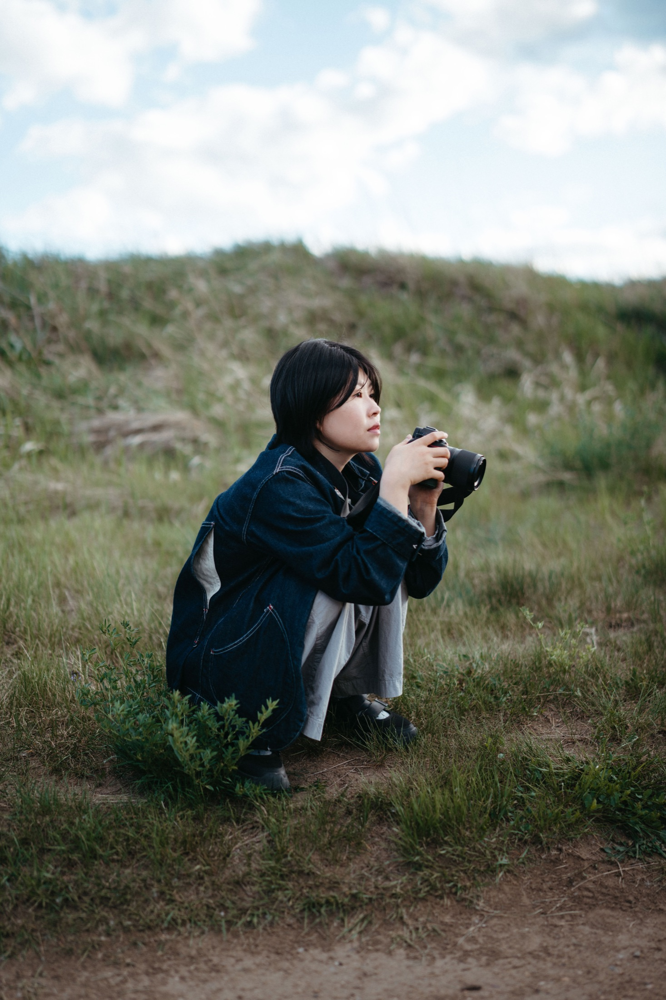

About Me
I'm drawn to the moments that shape us. The joyful ones, the meaningful ones, and everything in between. Every family carries a history, made up of countless little stories that often go unnoticed while we're living them.
My hope is to preserve a small piece of that story, not just how it looked, but how it felt.

A Closer Look
Based in Seattle, I'm most at home wandering coastal trails, exploring new places, and noticing the small details that often go overlooked in everyday life.
Photography started as a way of paying closer attention. Over time, it became a way of preserving the moments that quietly shape us—the glance between family members, the comfort of familiar routines, and the people who make a place feel like home.
When I'm not behind the camera, you'll usually find me traveling, planning the next adventure, spending time outdoors, or chasing beautiful light near the water.
I believe the most meaningful photographs are rarely the perfectly posed ones. They're the moments in between—the ones that seem ordinary now, but become priceless with time.
My approach is simple: I create space for real moments to unfold naturally.